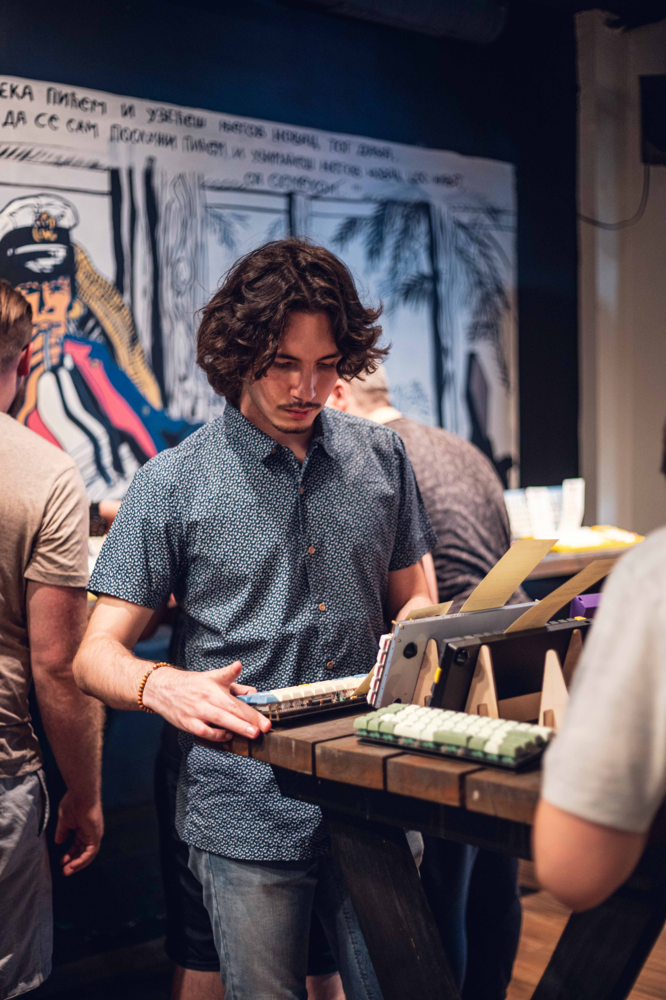

I am a passionate software engineer with a knack for developing innovative solutions.
With a strong foundation in education and experience in various fields,
I have successfully delivered numerous projects that stand out for their creativity and technical excellence.
I love the art of solving problems, no matter the difficulty, and programming has been a genuine enjoyment for me since my childhood.
I'm a team player, as no one man has done anything great. I love working with the team, as one.
They say to go alone if you want to go fast, but go together if you want to go far.

admiring a custom keyboard
My Skills
Languages
(including ASP.NET MVC, Razor & Blazor),
(JQuery, React, Typescript),
(Flask, pygame) and
(Minecraft spigot plugins and mods, Apache Maven and NetBeans).
Areas of expertise
Back-End
All the experience I acquired in my career has had back-end as the main focus, and I'm proud to say that I enjoyed every bit of it.
I'm interested in how things work in the background and I'm always striving for scalability, readability and efficiency,
achieving them through architectural means after negotiating the requirements with the clients,
as well as daily thoughtful implementations of any functionalities.
.NET (I've developed both API's and server-side rendered applications.)
Node.js (I've developed API's)
Python (I've developed API's and IoT Microservices)
I have worked with various database approaches and DBMS engines (Various SQL DBMS's, MongoDB, Redis, Neo4j).
SQL Server, SQLite, MySQL, MariaDB, Postgre
Redis
MongoDB
Neo4J
Front-End
DevOps
Projects
My portfolio showcases a variety of projects that demonstrate my ability to solve complex problems and implement scalable solutions.
From web applications to software tools, each project reflects my commitment to quality and innovation.
There's many more equally good projects than this, as I have hand-picked just a few worthy ones to showcase.
Ralex Tempus
(.NET Blazor & MariaDB, hosted on a linux QNAP server, deployed with docker.)
Tempus is a big .NET Blazor app, created for a steel construction company's needs. It manages construction projects by tracking various data points,
like time spent on tasks by each employee and materials used for each project.
It then uses all of this data to give the users a detailed breakdown of project costs,
as well as answering the question of "Who did what, when & where",
offering a cost prediction for future projects and by result, increasing the company's throughput.
I have designed and developed it by myself & It is being actively used in my Dad's steel construction company.
I do not have any compensation for this as I did it solely in my free time, out of my love for software engineering.
Kviziram
(Node.js, React.js, Neo4J & Redis, )
"Kviziram", wordplay on Serbian "Kriziram", is a quizzing platform allowing players to connect as friends, create and play together.
Ralex ReMIND
(ASP.NET MVC with JQuery & SQLite, hosted on a windows machine, deployed on IIS)
ReMIND system is a highly functional calendar for enterprise use.
It tracks credits, payments, meetings, car technical inspections etc.
They all come with notifications and reminders, hence the name.
All reminders are highly customizable.
It's a combination of a standalone API and a companion web app,
and it supports adding custom categories/subcategories to the database, so any type of event can be tracked and reminded about.
I have designed and developed it by myself & It is being actively used in my Dad's steel construction company.
I do not have any compensation for this as I did it solely in my free time, out of my love for software engineering.
RTOG
(ASP.NET MVC, JQuery, SQLite)
Short for "Risk Type Of a Game", it was developed to showcase architectural skills.
It's a game
The project is following "Clean" architecutre for web apps and is divided into three layers.
It implements various design patterns: Decorator, Observer, Singleton, Command, Dependency Injection etc.
 (including ASP.NET MVC, Razor & Blazor),
(including ASP.NET MVC, Razor & Blazor),
 (JQuery, React, Typescript),
(JQuery, React, Typescript),
 (Flask, pygame) and
(Flask, pygame) and
 (Minecraft spigot plugins and mods, Apache Maven and NetBeans).
(Minecraft spigot plugins and mods, Apache Maven and NetBeans).